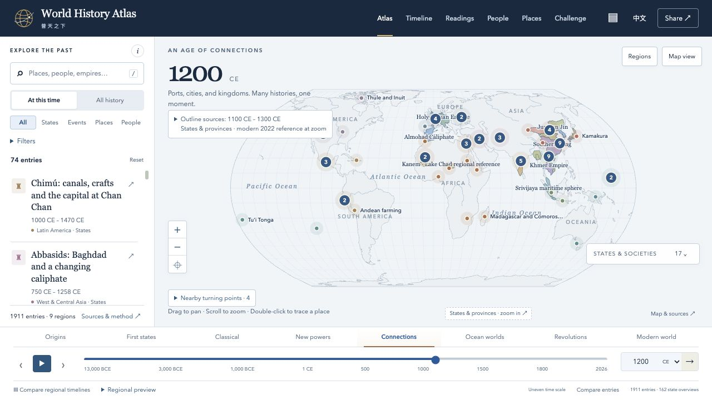

World History Atlas普天之下
Put each story back in its world. Explore people, places, and events across regions and time, in English and Chinese. Follow guided readings, compare histories side by side, and keep a personal notebook with bookmarks and notes.
Public · English / 中文
How the atlas grew
I started this atlas while telling my daughter history stories: where did each story happen, and what was happening elsewhere? English and Chinese let us explore the wider world while staying connected to our Chinese heritage. Inspired by DeanChensj and the contributors to Jiangshan Map (江山时序), the atlas includes attributed adaptations of their work and is now independently maintained. Historical views and modern reference geography are labeled separately; coverage remains selective.
GitHub Pages mirrorProject source and credits

Enlarge screenshot